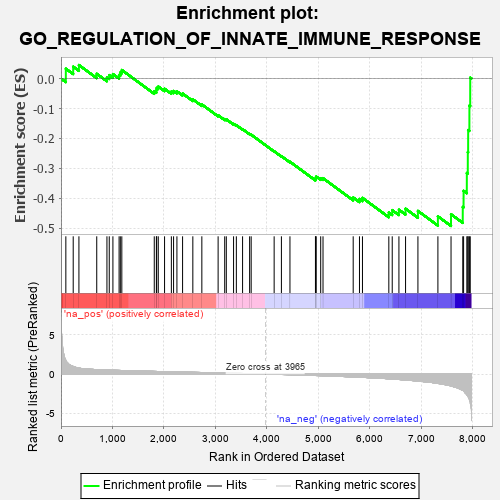
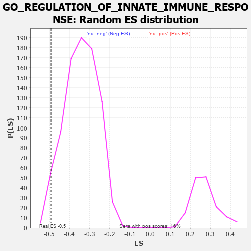

| | | Dataset | 7d |
| Phenotype | NoPhenotypeAvailable |
| Upregulated in class | na_neg |
| GeneSet | GO_REGULATION_OF_INNATE_IMMUNE_RESPONSE |
| Enrichment Score (ES) | -0.49201193 |
| Normalized Enrichment Score (NES) | -1.4383448 |
| Nominal p-value | 0.034319527 |
| FDR q-value | 0.2627952 |
| FWER p-Value | 1.0 |
Table: GSEA Results Summary

Fig 1: Enrichment plot: GO_REGULATION_OF_INNATE_IMMUNE_RESPONSE
Profile of the Running ES Score & Positions of GeneSet Members on the Rank Ordered List
| PROBE | GENE SYMBOL | GENE_TITLE | RANK IN GENE LIST | RANK METRIC SCORE | RUNNING ES | CORE ENRICHMENT | | 1 | UBE2K | | | 94 | 1.739 | 0.0329 | No |
| 2 | DCST1 | | | 237 | 0.959 | 0.0396 | No |
| 3 | CNOT7 | | | 348 | 0.750 | 0.0451 | No |
| 4 | XRCC6 | | | 694 | 0.560 | 0.0159 | No |
| 5 | HMGB2 | | | 892 | 0.507 | 0.0041 | No |
| 6 | MATR3 | | | 937 | 0.498 | 0.0113 | No |
| 7 | HMGB4 | | | 1008 | 0.482 | 0.0149 | No |
| 8 | SRC | | | 1128 | 0.459 | 0.0117 | No |
| 9 | PSMD7 | | | 1152 | 0.454 | 0.0204 | No |
| 10 | PSMD2 | | | 1181 | 0.450 | 0.0285 | No |
| 11 | PSMD4 | | | 1811 | 0.335 | -0.0423 | No |
| 12 | TRIM5 | | | 1852 | 0.327 | -0.0389 | No |
| 13 | PSMD6 | | | 1858 | 0.326 | -0.0312 | No |
| 14 | PAK3 | | | 1889 | 0.322 | -0.0267 | No |
| 15 | RAF1 | | | 2011 | 0.303 | -0.0342 | No |
| 16 | PSME4 | | | 2143 | 0.285 | -0.0434 | No |
| 17 | SYK | | | 2186 | 0.278 | -0.0415 | No |
| 18 | PSMF1 | | | 2251 | 0.268 | -0.0427 | No |
| 19 | SIN3A | | | 2361 | 0.251 | -0.0500 | No |
| 20 | PSMD5 | | | 2560 | 0.218 | -0.0694 | No |
| 21 | CUL1 | | | 2735 | 0.193 | -0.0864 | No |
| 22 | ABCE1 | | | 3051 | 0.143 | -0.1225 | No |
| 23 | PSMD9 | | | 3179 | 0.125 | -0.1353 | No |
| 24 | AP1G1 | | | 3210 | 0.121 | -0.1360 | No |
| 25 | TAB1 | | | 3351 | 0.097 | -0.1512 | No |
| 26 | MED1 | | | 3405 | 0.089 | -0.1556 | No |
| 27 | PQBP1 | | | 3526 | 0.072 | -0.1689 | No |
| 28 | SKP1 | | | 3663 | 0.049 | -0.1848 | No |
| 29 | DHX9 | | | 3693 | 0.044 | -0.1874 | No |
| 30 | CRK | | | 4139 | -0.031 | -0.2428 | No |
| 31 | PSME3 | | | 4280 | -0.056 | -0.2590 | No |
| 32 | CDC37 | | | 4446 | -0.084 | -0.2777 | No |
| 33 | EP300 | | | 4941 | -0.186 | -0.3353 | No |
| 34 | XRCC5 | | | 4946 | -0.187 | -0.3310 | No |
| 35 | PRKDC | | | 4955 | -0.189 | -0.3271 | No |
| 36 | PDPK1 | | | 5043 | -0.207 | -0.3328 | No |
| 37 | DRD2 | | | 5088 | -0.221 | -0.3326 | No |
| 38 | PSMD1 | | | 5674 | -0.367 | -0.3970 | No |
| 39 | LAMP1 | | | 5796 | -0.404 | -0.4019 | No |
| 40 | TKFC | | | 5854 | -0.419 | -0.3983 | No |
| 41 | BIRC3 | | | 6366 | -0.603 | -0.4474 | No |
| 42 | MALT1 | | | 6432 | -0.634 | -0.4393 | No |
| 43 | OTOP1 | | | 6562 | -0.690 | -0.4378 | No |
| 44 | PAK1 | | | 6691 | -0.757 | -0.4345 | No |
| 45 | LRP8 | | | 6931 | -0.889 | -0.4418 | No |
| 46 | GRN | | | 7319 | -1.194 | -0.4599 | Yes |
| 47 | NLRC3 | | | 7574 | -1.515 | -0.4530 | Yes |
| 48 | MUC2 | | | 7802 | -2.066 | -0.4285 | Yes |
| 49 | TRAF6 | | | 7818 | -2.157 | -0.3749 | Yes |
| 50 | FYN | | | 7881 | -2.622 | -0.3152 | Yes |
| 51 | MUC19 | | | 7900 | -2.797 | -0.2455 | Yes |
| 52 | PSMD3 | | | 7907 | -2.887 | -0.1719 | Yes |
| 53 | PSMD8 | | | 7931 | -3.286 | -0.0902 | Yes |
| 54 | XIAP | | | 7947 | -3.696 | 0.0030 | Yes |
Table: GSEA details [plain text format]

Fig 2: GO_REGULATION_OF_INNATE_IMMUNE_RESPONSE: Random ES distribution
Gene set null distribution of ES for GO_REGULATION_OF_INNATE_IMMUNE_RESPONSE